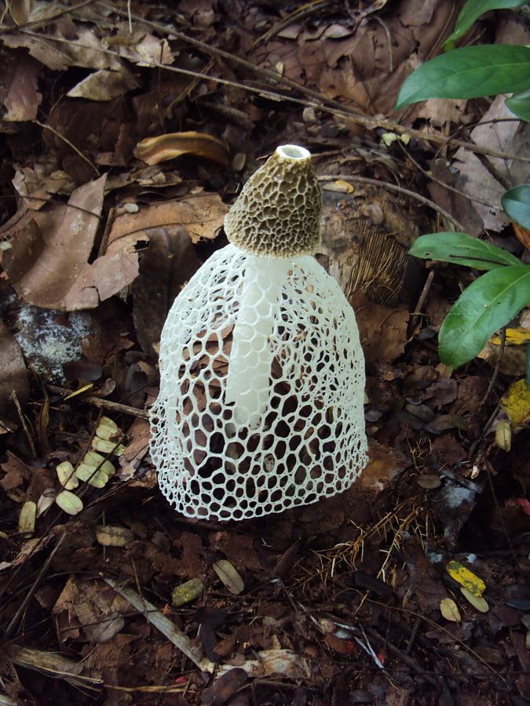

जालीदार खुम्बीVeiled Stinkhorn
Phallus indusiatus · Phallaceae · FNG-0012

- Scientific name
- Phallus indusiatus Vent.
- Family
- Phallaceae
- Hindi
- जालीदार खुम्बी
- Status here
- native
- IUCN
- not evaluated
When to look कब देखें
Expected mainly in May, June, July, August, September.
जालीदार खुम्बी / Veiled Stinkhorn
Phallus indusiatus Vent. — Phallaceae
जालीदार खुम्बी (बांस का कवक / घूंघट वाली देवी / ब्राइडल वील स्टिनहॉर्न / जालीदार मशरूम) — पूर्वी उत्तर प्रदेश के बांस के झुरमुटों (bamboo groves), सड़े हुए पत्तों के ढेरों और नम छायादार बगीचों में मानसून के दौरान (May to September) उगने वाला एक अत्यंत ही विस्मयकारी, सुंदर और अजीब बनावट वाला कवक (phallic fungus) है। इसकी सबसे बड़ी पहचान इसके शीर्ष टोपे से नीचे की ओर लटकने वाली एक नाजुक, सफेद, जालीदार स्कर्ट या घूंघट है, जिसे वनस्पति विज्ञान में इन्डूसियम (indusium / lacework veil) कहा जाता है। जमीन के नीचे यह एक सफेद, अंडे जैसी संरचना (gelatinous egg) के रूप में शुरू होता है, जो अचानक फटकर कुछ ही घंटों में एक सीधा खड़े होने वाला स्पंजी सफेद तना (stipe) और एक शंक्वाकार टोपा बनाता है। टोपे के ऊपर गहरे जैतून-हरे रंग की एक चिपचिपी बीजाणु परत (gleba) चढ़ी होती है, जिससे सड़े हुए मांस जैसी तीव्र दुर्गंध (foul rotting-meat smell) आती है। यह दुर्गंध मक्खियों को आकर्षित करती है, जो बीजाणुओं को अपने पैरों और पेट के जरिए फैलाती हैं। चीन के युन्नान प्रांत में इसे सुखाकर एक विशेष व्यंजन (delicacy) के रूप में खाया जाता है, लेकिन इसके उपयोग में सुरक्षा सावधानियां आवश्यक हैं।
Quick Identification त्वरित पहचान
| Feature | Description |
|---|---|
| Veil (Indusium) | A delicate, white, net-like lace skirt (10–20 cm long) hanging downwards from the cap base, bell-shaped |
| Cap | Conical (3–5 cm), covered in a sticky, slimy, foul-smelling olive-green spore mass (gleba) |
| Stipe (Stem) | 15–25 cm high, 1.5–3.0 cm thick, hollow, spongy, pure white, feeling like soft styrofoam |
| Egg stage | Starts as a whitish-brown, soft, gelatinous underground ball (3–6 cm) before the stem hatches out |
| Spore dispersal | Relies entirely on carrion-feeding flies attracted by its strong rotting-meat odor |
Field tip: Look in damp bamboo leaf litter in July early in the morning. Search for a beautiful white lace skirt hanging on a spongy white stem. Walk closer; you will smell a strong, unpleasant rotting meat scent. You will see flies crawling all over the sticky green cap.
Morphology आकारिकी
Biometrics (typical measurements of mature fruit bodies in the northern Indian plains):
| Measurement | Range |
|---|---|
| Stipe height | 15.0–25.0 cm |
| Stipe thickness | 1.5–3.0 cm |
| Veil length | 10.0–20.0 cm |
| Cap height | 3.0–5.0 cm |
| Egg diameter | 3.0–6.0 cm |
| Spore size | 3.0–4.0 × 1.5–2.0 µm |
Egg Stage: The egg contains a thick, jelly-like middle layer that protects the developing stipe and cap from drying out.
Stipe: Cylindrical, tapering toward the apex, hollow, wall made of two or three layers of small air-filled bubbles.
Veil: Formed by the expansion of the inner cap layer, forming a polygonal white mesh that spreads open wide to keep the stem balanced.
Spores: Microscopic, cylindrical, smooth, light green-brown.
Ecology and Substrate पारिस्थितिकी और उपस्तर
- Bamboo Specialist: Saprotrophic fungus, decomposing woody bamboo leaf litter and root sheath debris.
- Substrate: Found in deep organic humus and moist soil rich in woody carbon.
- Edibility safety caveat:
> [!IMPORTANT]
> While the dried stalks and veils are consumed as a gourmet food in Asian cuisines (known as "bamboo pith" in Chinese soups), wild fresh stinkhorns should never be consumed raw or without expert cleaning. The foul green spore slime is toxic and must be completely washed away before cooking. Any foraging of wild fungi carries high poisoning risks due to lookalike toxic species.
Associated Species / Interactions संबंधित प्रजातियाँ
- Fly Mutualism: The rotting-meat odor (containing chemical attractants like dimethyl trisulfide) attracts green bottle flies (Lucilia) and flesh flies (Sarcophaga). The flies consume the sweet spore slime, dispersing the microscopic spores intact in their droppings.
- Substrate partners: Frequently grows near bamboo clump root systems where moisture is retained.
Expected Locally स्थानीय रूप से अपेक्षित
Not a field record. Written from published accounts for eastern Uttar Pradesh. No confirmed local sighting yet — if you have seen it, that is what the atlas needs.
अभी तक स्थानीय पुष्टि नहीं। यह विवरण प्रकाशित स्रोतों से है, किसी अवलोकन से नहीं।
An uncommon but highly memorable fungus observed in old bamboo clumps (bans ki kothi) across the Basti district during July and August, recorded in the Harraiya block. Local farmers state that this "jhalardar chatri" (fringed umbrella) hatches quickly in the morning and collapses by noon under the hot sun, turning into a melting heap of jelly.
Distribution वितरण
Global range: Widespread across tropical and subtropical zones of Asia, Africa, the Americas, and Australia.
In India: Found in bamboo-rich plains and moist deciduous forest floors of all states.
In Uttar Pradesh: Distributed in bamboo plantations and forest divisions.
In Basti district / eastern UP: Found inside village bamboo groves.
Research Questions शोध प्रश्न
Anyone can investigate these | कोई भी इन प्रश्नों की जाँच कर सकता है
- How many hours does a Veiled Stinkhorn egg take to expand into a fully open lace skirt after the egg skin splits? — Record expansion time-lapse.
- What is the number of fly species attracted to the foul-smelling green cap in a 30-minute window in the morning? — Document insect visitors.
- Does the Stinkhorn fail to produce its lace skirt if the humidity drops below 60% during hatching? — Track humidity and veil expansion.
- How many hours does the white stipe remain standing after the green spore slime is completely eaten by flies? — Monitor stem collapse times.
- Does the presence of Stinkhorn mycelium in bamboo compost improve the soil moisture retention in Basti? / क्या बस्ती में बांस की खाद में जालीदार खुम्बी के कवकजाल (Mycelium) की उपस्थिति मिट्टी की नमी धारण करने की क्षमता को बढ़ाती है? — Conduct soil tests.
Similar Species मिलती-जुलती प्रजातियाँ
| Species | How to tell apart | comparison |
|---|---|---|
| Common Stinkhorn (Phallus impudicus) | Lacks the net-like hanging lace skirt (indusium); cap sits directly on the white spongy stem | साधारण स्टिनहॉर्न — जालीदार स्कर्ट का पूर्ण अभाव |
| Orange Stinkhorn (Mutinus caninus) | Stem is orange-red; lacks a separate cap, the green spore slime is situated directly on the stem tip | नारंगी स्टिनहॉर्न — छोटा आकार, लाल-नारंगी तना |
| Net Spored Stinkhorn (Dictyophora multicolor) | Has a bright yellow-orange or pink lace skirt; found in tropical rainforests; stipe is often colored | पीली जालीदार खुम्बी — पीले-नारंगी रंग का घूंघट |
Field rule: Spongy white phallic stem (15–25 cm) topped with an olive-green foul-smelling cap, from which hangs a delicate net-like white lace skirt, is the Veiled Stinkhorn.
Taxonomy & Classification वर्गीकरण
Original description. Étienne Pierre Ventenat described this species as Phallus indusiatus in 1798 in his Mémoires de l'Institut National des Sciences et Arts (Vol. 1, p. 520). The type locality was listed as Dutch Guiana. The genus name Phallus is Latin for the male organ, referencing the shape of the stem. The specific name indusiatus is Latin for wearing an undergarment or veil.
Subspecies. Monotypic — no subspecies are currently recognised in the main index.
Family and order placement. Placed in the order Phallales, family Phallaceae (stinkhorn family), genus Phallus.
Phylogenetic notes. Phallus indusiatus belongs to the gasteroid lineage within Basidiomycota, having evolved away from wind-dispersed spores to insect-vectored spore dispersal (entomochory) using foul-smelling volatile chemicals to attract flies.
IUCN status rationale. Not evaluated (NE) by the IUCN Red List. It has a secure wild population in tropical forest zones.
Photo Gallery फोटो गैलरी
References संदर्भ
- Ventenat, É. P. (1798). Dissertation sur le genre Phallus. Mémoires de l'Institut National des Sciences et Arts, Vol. 1, p. 520. [original description]
- Brandis, D. (1906). Indian Trees (references bamboo associations). Archibald Constable & Co., London.
- Bilgrami, K. S., Jamaluddin, S. & Rizwi, M. A. (1979). Fungi of India. Today and Tomorrow's Printers & Publishers, New Delhi.
- Hemmes, D. E. & Desjardin, D. E. (2009). Stinkhorns of the Hawaiian Islands. Fungi (covers Phallus indusiatus morphology).
- World Flora Online (2024). Phallus indusiatus details.
- GBIF Occurrence Data — Phallus indusiatus, India (2010–2025).
Source file: species/fungi/mushrooms/veiled_stinkhorn.md